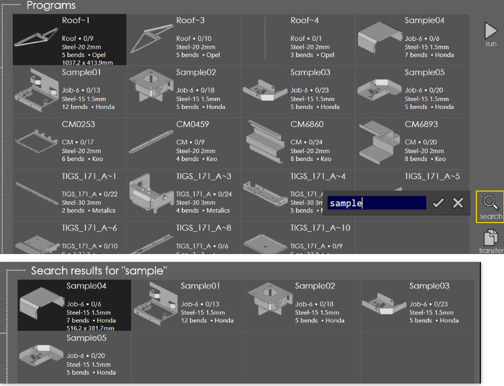

Launch the search prompt using the search button from the right. Type-in the search text and press OK. The programs are searched by the part name, job name and the job customer. And the list is updated with the programs matching the search text.
